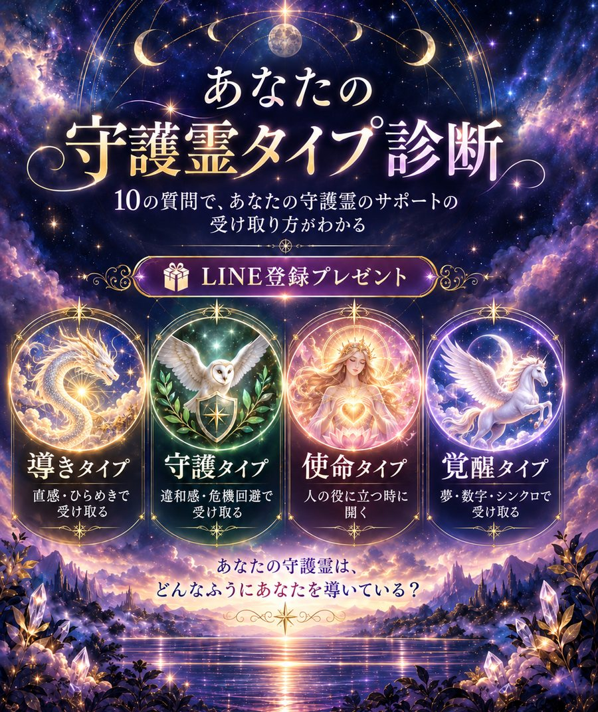

<!DOCTYPE html>
<html lang="ja">
<head>
<meta charset="UTF-8">
<meta name="viewport" content="width=device-width, initial-scale=1.0, viewport-fit=cover">
<title>守護霊タイプ診断</title>
<link rel="preconnect" href="https://fonts.googleapis.com">
<link rel="preconnect" href="https://fonts.gstatic.com" crossorigin>
<link rel="stylesheet" href="https://fonts.googleapis.com/css2?family=Shippori+Mincho+B1:wght@500;700;800&family=Zen+Kaku+Gothic+New:wght@400;500;700&display=swap">
<style>
/* Layout: 夜の神社の一本道。中央の細い柱（max 560px）に、問い → 御札（おふだ）型の結果カードが縦に並ぶ */
:root {
  --night: #150f30;      /* 夜の紫紺（ポスターに合わせる） */
  --night-2: #221a4a;    /* 一段明るい紫（カード地） */
  --line: #3b3072;       /* 罫線 */
  --gold: #d9b45a;       /* 金箔 */
  --gold-soft: #f1dfa8;  /* 淡い金（見出し） */
  --paper: #f4ecd8;      /* 和紙（御札の地） */
  --ink: #1d1a2e;        /* 墨 */
  --vermilion: #b8432f;  /* 朱印 */
  --text: #e6e3f2;
  --muted: #a6a8c8;
  --font-display: "Shippori Mincho B1", "Hiragino Mincho ProN", "Yu Mincho", serif;
  --font-body: "Zen Kaku Gothic New", "Hiragino Kaku Gothic ProN", "Noto Sans JP", sans-serif;
  color-scheme: dark;
}
* { box-sizing: border-box; }
html, body { min-height: 100%; }
body {
  margin: 0;
  background: var(--night);
  background-image:
    radial-gradient(ellipse 80% 50% at 50% -10%, rgba(217,180,90,.16), transparent 70%),
    radial-gradient(circle at 20% 80%, rgba(150,100,220,.16), transparent 50%);
  color: var(--text);
  font-family: var(--font-body);
  font-size: 16px;
  line-height: 1.8;
}
#stars { position: fixed; inset: 0; width: 100%; height: 100%; pointer-events: none; z-index: 0; }
main {
  position: relative; z-index: 1;
  max-width: 560px; margin: 0 auto;
  padding-inline: 16px; padding-block: 40px 64px;
}
h1, h2, h3 { font-family: var(--font-display); text-wrap: balance; margin: 0; }
button { font: inherit; cursor: pointer; }
button:focus-visible { outline: 2px solid var(--gold-soft); outline-offset: 3px; }

/* ---------- はじまり ---------- */
.intro { display: grid; gap: 28px; text-align: center; justify-items: center; }
.torii { width: 120px; height: auto; color: var(--vermilion); }
.eyebrow { font-size: 12px; letter-spacing: .35em; color: var(--gold); }
.intro h1 { font-size: clamp(36px, 10vw, 54px); font-weight: 800; color: var(--gold-soft); letter-spacing: .08em; line-height: 1.25; }
.intro p { margin: 0; color: var(--muted); max-width: 30em; }
.spirits-row { display: flex; flex-wrap: wrap; justify-content: center; gap: 8px; }
.spirits-row span {
  width: 40px; height: 40px; display: grid; place-items: center;
  border: 1px solid var(--line); border-radius: 50%;
  font-family: var(--font-display); font-weight: 700; color: var(--gold);
}
.btn-main {
  background: var(--gold); color: var(--ink);
  border: 0; border-radius: 999px;
  padding: 14px 40px; font-weight: 700; letter-spacing: .15em;
  box-shadow: 0 0 0 4px rgba(217,180,90,.18);
  transition: transform .15s, box-shadow .15s;
}
.btn-main:hover { transform: translateY(-1px); box-shadow: 0 0 0 6px rgba(217,180,90,.25); }
.btn-sub {
  background: transparent; color: var(--gold-soft);
  border: 1px solid var(--gold); border-radius: 999px;
  padding: 10px 24px; font-size: 14px; letter-spacing: .1em;
}
.note { font-size: 12px; color: var(--muted); }

.sr-only { position: absolute; width: 1px; height: 1px; overflow: hidden; clip: rect(0 0 0 0); white-space: nowrap; }
.poster { display: block; width: 100%; height: auto; border-radius: 14px; box-shadow: 0 18px 50px rgba(0,0,0,.5); }
.type-art { justify-self: center; width: min(220px, 60vw); height: auto; aspect-ratio: 1; border-radius: 50%; border: 2px solid var(--gold); box-shadow: 0 0 0 6px rgba(217,180,90,.15), 0 0 48px var(--glow, var(--gold)); margin-top: 14px; }
.intro { gap: 22px; }
.result-poster { display: block; justify-self: center; width: 100%; max-width: 420px; height: auto; margin-top: 14px; border-radius: 14px; border: 1px solid var(--gold); box-shadow: 0 0 40px color-mix(in srgb, var(--glow, var(--gold)) 45%, transparent), 0 18px 50px rgba(0,0,0,.5); }

/* ---------- 質問 ---------- */
.quiz { display: grid; gap: 24px; }
.progress { display: grid; gap: 8px; }
.progress-label { display: flex; justify-content: space-between; font-size: 13px; color: var(--muted); font-variant-numeric: tabular-nums; }
.progress-label b { font-family: var(--font-display); color: var(--gold); font-size: 15px; letter-spacing: .1em; }
.bar { height: 4px; background: var(--line); border-radius: 2px; overflow: hidden; }
.bar i { display: block; height: 100%; background: var(--gold); transition: width .35s ease; }
.question { font-size: clamp(22px, 6vw, 28px); font-weight: 700; color: var(--gold-soft); line-height: 1.5; }
.options { display: grid; gap: 12px; }
.option {
  display: flex; align-items: center; gap: 14px;
  text-align: left; width: 100%;
  background: var(--night-2); color: var(--text);
  border: 1px solid var(--line); border-radius: 10px;
  padding: 14px 16px;
  transition: border-color .15s, background .15s, transform .15s;
}
.option:hover { border-color: var(--gold); transform: translateX(3px); }
.option .kana {
  flex: none; width: 30px; height: 30px; display: grid; place-items: center;
  font-family: var(--font-body); font-weight: 700; color: var(--gold);
  border: 1px solid var(--gold); border-radius: 50%; font-size: 14px;
}
.option span:last-child { min-width: 0; }
.back { justify-self: start; background: none; border: 0; color: var(--muted); font-size: 14px; padding: 4px 0; }
.back:hover { color: var(--text); }

/* ---------- 霊視中 ---------- */
.reading { display: grid; justify-items: center; gap: 24px; text-align: center; padding-block: 60px; }
.flame { width: 70px; height: 70px; border-radius: 50%; background: radial-gradient(circle, var(--gold-soft), rgba(217,180,90,0) 70%); animation: pulse 1.1s ease-in-out infinite; }
@keyframes pulse { 50% { transform: scale(1.35); opacity: .6; } }
.reading p { font-family: var(--font-display); font-size: 20px; color: var(--gold-soft); letter-spacing: .2em; margin: 0; }

/* ---------- 結果 ---------- */
.result { display: grid; gap: 28px; }
.result-head { text-align: center; display: grid; gap: 6px; }
.result-head .eyebrow { color: var(--muted); }

.ofuda {
  background: var(--paper); color: var(--ink);
  border-radius: 4px;
  padding: 22px 20px 26px;
  display: grid; grid-template-columns: auto 1fr; gap: 20px;
  position: relative;
  box-shadow: 0 20px 50px rgba(0,0,0,.45);
  border: 1px solid var(--gold);
  outline: 1px solid var(--paper); outline-offset: -7px;
}
.ofuda::before { /* 御札の内枠（金） */
  content: ""; position: absolute; inset: 9px; border: 1px solid var(--gold); pointer-events: none;
}
.ofuda-name {
  writing-mode: vertical-rl;
  font-family: var(--font-display); font-weight: 800;
  font-size: clamp(30px, 9vw, 40px); letter-spacing: .18em;
  color: var(--ink);
  border-right: 2px solid var(--vermilion);
  padding-right: 10px; margin-left: 4px;
  min-height: 200px;
}
.ofuda-name small { font-size: .38em; font-weight: 500; letter-spacing: .3em; color: var(--vermilion); margin-top: .8em; }
.ofuda-body { min-width: 0; display: grid; gap: 14px; align-content: start; }
.seal {
  justify-self: end;
  width: 78px; height: 78px; display: grid; place-items: center;
  border: 3px solid var(--vermilion); border-radius: 8px;
  color: var(--vermilion); font-family: var(--font-display); font-weight: 800; font-size: 44px;
  transform: rotate(-6deg);
  background: rgba(184,67,47,.06);
}
.catch { font-family: var(--font-display); font-weight: 700; font-size: 19px; line-height: 1.6; color: var(--ink); }
.desc { margin: 0; font-size: 15px; color: #3a3550; }
.desc { display: grid; gap: 10px; }
.desc p, .panel-body p { margin: 0; }
.desc strong, .panel-body strong { color: var(--vermilion); font-weight: 700; }
.panel-body strong { color: var(--gold-soft); }
.voices, .points { list-style: none; margin: 0; padding: 0; display: grid; gap: 6px; }
.voices li { font-family: var(--font-display); font-weight: 700; color: var(--ink); padding-left: 12px; border-left: 2px solid var(--vermilion); line-height: 1.6; }
.panel-body { display: grid; gap: 10px; font-size: 15px; }
.points li { font-family: var(--font-display); font-weight: 700; color: var(--gold-soft); }
.flow { display: flex; flex-wrap: wrap; align-items: center; gap: 6px; }
.flow span { border: 1px solid var(--gold); color: var(--gold-soft); border-radius: 999px; padding: 3px 10px; font-size: 14px; font-family: var(--font-display); font-weight: 700; }
.flow i { font-style: normal; color: var(--gold); }
.keyword { text-align: center; display: grid; gap: 8px; padding-block: 20px; border-top: 1px solid var(--gold); border-bottom: 1px solid var(--gold); }
.keyword p { margin: 0; font-family: var(--font-display); font-weight: 800; font-size: clamp(20px, 5.6vw, 26px); color: var(--gold-soft); line-height: 1.6; text-wrap: balance; word-break: keep-all; overflow-wrap: anywhere; }


.panel { background: var(--night-2); border: 1px solid var(--line); border-radius: 10px; padding: 18px 18px 20px; display: grid; gap: 12px; }
.panel h3 { font-size: 16px; color: var(--gold-soft); letter-spacing: .12em; }
.panel p { margin: 0; font-size: 15px; }
.facts { display: grid; grid-template-columns: repeat(2, minmax(0, 1fr)); gap: 12px; }
.fact { background: var(--night-2); border: 1px solid var(--line); border-radius: 10px; padding: 12px 14px; display: grid; gap: 2px; }
.fact dt { font-size: 11px; letter-spacing: .25em; color: var(--muted); }
.fact dd { margin: 0; font-family: var(--font-display); font-weight: 700; color: var(--gold-soft); font-size: 16px; line-height: 1.5; }
.fact .swatch { display: inline-block; width: 12px; height: 12px; border-radius: 50%; margin-right: 6px; vertical-align: -1px; border: 1px solid rgba(255,255,255,.3); }

.ranks { display: grid; gap: 10px; }
.rank { display: grid; grid-template-columns: 5.2em 1fr 2.8em; align-items: center; gap: 10px; font-size: 14px; }
.rank .r-name { font-family: var(--font-display); font-weight: 700; white-space: nowrap; }
.rank .r-bar { height: 8px; background: var(--line); border-radius: 4px; overflow: hidden; }
.rank .r-bar i { display: block; height: 100%; background: var(--gold); border-radius: 4px; }
.rank .r-pct { text-align: right; font-variant-numeric: tabular-nums; color: var(--muted); }

.actions { display: flex; flex-wrap: wrap; gap: 12px; justify-content: center; }
.toast { text-align: center; font-size: 13px; color: var(--gold); min-height: 1.4em; margin: 0; }
textarea#share-text { width: 100%; min-height: 110px; background: var(--night-2); color: var(--text); border: 1px solid var(--line); border-radius: 8px; padding: 10px; font: inherit; font-size: 13px; }

.fade-in { animation: fadeIn .45s ease both; }
@keyframes fadeIn { from { opacity: .0; transform: translateY(8px); } to { opacity: 1; transform: none; } }

@media (prefers-reduced-motion: reduce) {
  *, *::before, *::after { animation: none !important; transition: none !important; }
}
@media (max-width: 400px) {
  .ofuda { grid-template-columns: 1fr; }
  .ofuda-name { writing-mode: horizontal-tb; min-height: 0; border-right: 0; border-bottom: 2px solid var(--vermilion); padding: 0 64px 8px 0; margin: 0; }
  .ofuda-name { font-size: 30px; letter-spacing: .1em; white-space: nowrap; }
  .ofuda-name small { display: inline-block; margin: 0 0 0 .6em; }
  .seal { position: absolute; top: 18px; right: 18px; width: 60px; height: 60px; font-size: 34px; }
}
</style>
</head>
<body>
<canvas id="stars" aria-hidden="true"></canvas>
<main id="app"></main>

<script>
// ===== 守護霊タイプ（4種類） =====
const SPIRITS = {
  // body / business は、こちらで書いたHTML（利用者の入力は入らない）
  michibiki: {
    name: "導きタイプ", kana: "みちびき", seal: "導", color: "#e2a33b",
    poster: "img/result-michibiki.jpg", posterSize: [720, 1279],
    lead: "あなたは、直感やひらめきを通して守護霊からサインを受け取りやすいタイプ。",
    body: `<ul class="voices"><li>「なんとなくこっち」</li><li>「理由はないけど今な気がする」</li></ul>
      <p>そんな感覚が、実は大切なメッセージになっていることがあります。</p>
      <p>このタイプは、頭で考えすぎると本来の感覚が鈍りやすいのが特徴。</p>`,
    business: `<div class="flow"><span>直感</span><i>→</i><span>小さく行動</span><i>→</i><span>現実を見る</span></div>
      <p>この流れを意識すると、守護霊との連携が深まりやすいです。</p>`,
    keyword: "考えすぎる前に、感じたことを一度信じる"
  },
  shugo: {
    name: "守護タイプ", kana: "しゅご", seal: "護", color: "#4f9a7e",
    lead: "あなたは、違和感や危機回避を通して守護霊のサポートを受け取りやすいタイプ。",
    body: `<p>人・場所・仕事に対して</p>
      <ul class="voices"><li>「なんか違う」</li><li>「今日はやめた方がいい気がする」</li></ul>
      <p>そんな感覚が強い人です。</p>`,
    business: `<ul class="points"><li>「誰と組むか」</li><li>「何を断るか」</li><li>「どこに時間を使わないか」</li></ul>
      <p>がとても重要。</p>
      <p>あなたは、攻める力以上に<strong>“不要なものを見抜く力”</strong>を持っています。</p>`,
    keyword: "違和感を軽く扱わない"
  },
  shimei: {
    name: "使命タイプ", kana: "しめい", seal: "命", color: "#c8483a",
    lead: "あなたは、人の役に立つ時に守護霊とのつながりが強くなるタイプ。",
    body: `<ul class="voices"><li>誰かの相談に乗る</li><li>教える</li><li>導く</li><li>支える</li></ul>
      <p>そんな時に、不思議と必要な言葉が出てきたり、流れが良くなったりしませんか？</p>
      <p>このタイプは、「自分のためだけ」よりも誰かに貢献する時に力が開く傾向があります。</p>`,
    business: `<p>ビジネスとの相性もとても良く、自分の才能を人のために使うほど、次のご縁やチャンスにつながりやすいです。</p>`,
    keyword: "自分の力を、誰のために使う？"
  },
  kakusei: {
    name: "覚醒タイプ", kana: "かくせい", seal: "覚", color: "#8a6ad8",
    lead: "あなたは、夢・数字・偶然の一致・体感など、目に見えないサインを受け取りやすいタイプ。",
    body: `<ul class="voices"><li>「最近ゾロ目ばっかり見る」</li><li>「夢が妙にリアル」</li><li>「考えていた人から連絡が来た」</li></ul>
      <p>そんな体験が多いかもしれません。</p>
      <p>このタイプは、感覚を育てるほどサインに気づきやすくなります。</p>
      <p>ただし、サインを探しすぎると迷子になりやすいので、大切なのは<strong>“受け取ったあと現実でどう動くか”</strong>。</p>`,
    business: "",
    keyword: "サインを見つけるだけで終わらせない"
  }
};
const ORDER = ["michibiki","shugo","shimei","kakusei"];

// ===== 質問（えらんだ答えのタイプに1点） =====
const QUESTIONS = [
  { q: "何かを決める時、いちばん多いのは？", a: [
    ["理由はないけど「こっち」と感じる", "michibiki"],
    ["人や場所への違和感を参考にする", "shugo"],
    ["誰かの役に立つかどうかで決める", "shimei"],
    ["偶然の一致やサインを参考にする", "kakusei"] ]},
  { q: "「守られてるかも」と感じる瞬間は？", a: [
    ["ふと答えが降りてきた時", "michibiki"],
    ["危ないことを直前で回避できた時", "shugo"],
    ["必要な人とのご縁がつながった時", "shimei"],
    ["ゾロ目や夢、シンクロが続いた時", "kakusei"] ]},
  { q: "人からよく言われるのは？", a: [
    ["直感が鋭い", "michibiki"],
    ["人を見る目がある", "shugo"],
    ["面倒見がいい", "shimei"],
    ["不思議な体験が多い", "kakusei"] ]},
  { q: "ビジネスで迷った時は？", a: [
    ["感覚的に「今だ」と思う方へ進む", "michibiki"],
    ["違和感があるものは避ける", "shugo"],
    ["お客様にどう貢献できるかを考える", "shimei"],
    ["タイミングやサインを待つ", "kakusei"] ]},
  { q: "自分に起こりやすいことは？", a: [
    ["急にアイデアが浮かぶ", "michibiki"],
    ["人の本音や空気を察知する", "shugo"],
    ["人に相談されたり頼られたりする", "shimei"],
    ["夢や数字、偶然が妙に重なる", "kakusei"] ]},
  { q: "「これはやめた方がいい」と感じる時は？", a: [
    ["急に気持ちが冷める", "michibiki"],
    ["身体が重くなる・ザワつく", "shugo"],
    ["誰かを傷つけそうだと感じる", "shimei"],
    ["不思議なくらい予定が進まなくなる", "kakusei"] ]},
  { q: "仕事でいちばん嬉しいのは？", a: [
    ["自分のアイデアが形になった時", "michibiki"],
    ["トラブルを未然に防げた時", "shugo"],
    ["相手が変化・成長した時", "shimei"],
    ["偶然が重なって流れが一気に動いた時", "kakusei"] ]},
  { q: "スピリチュアルとの関わり方は？", a: [
    ["直感として自然に使いたい", "michibiki"],
    ["自分や大切な人を守るために使いたい", "shugo"],
    ["人の役に立つために使いたい", "shimei"],
    ["もっと深く感じたり視たりしてみたい", "kakusei"] ]},
  { q: "「なんか流れがいい」と感じるのは？", a: [
    ["自分の感覚に従った時", "michibiki"],
    ["嫌な予感を無視しなかった時", "shugo"],
    ["誰かのために動いた時", "shimei"],
    ["サインに気づいて行動した時", "kakusei"] ]},
  { q: "今いちばん知りたいのは？", a: [
    ["直感をもっと信じる方法", "michibiki"],
    ["守られているサインの見分け方", "shugo"],
    ["自分の使命や役割", "shimei"],
    ["守護霊とのつながりを深める方法", "kakusei"] ]}
];
const KANA = ["A","B","C","D"];
const KANJI_NUM = ["一","二","三","四","五","六","七","八","九","十"];

// ===== 状態 =====
let step = 0;
let answers = []; // 各問でえらんだ番号

const app = document.getElementById("app");
const esc = s => String(s).replace(/[&<>"]/g, c => ({ "&":"&amp;","<":"&lt;",">":"&gt;",'"':"&quot;" }[c]));

function score(list) {
  const s = Object.fromEntries(ORDER.map(k => [k, 0]));
  list.forEach((choice, i) => {
    s[QUESTIONS[i].a[choice][1]] += 1;
  });
  return s;
}
function topSpirit(s) {
  // 同点のときは、あとの質問で選んだタイプを優先
  const max = Math.max(...ORDER.map(k => s[k]));
  const tied = ORDER.filter(k => s[k] === max);
  if (tied.length === 1) return tied[0];
  for (let i = answers.length - 1; i >= 0; i--) {
    const t = QUESTIONS[i].a[answers[i]][1];
    if (tied.includes(t)) return t;
  }
  return tied[0];
}

// ===== 画面 =====
function renderIntro() {
  app.innerHTML = `
  <section class="intro fade-in">
    <h1 class="sr-only">あなたの守護霊タイプ診断</h1>
    
    <button class="btn-main" id="start">診断をはじめる</button>
    <p class="note">所要時間：約1分 ／ 全10問 ／ 4タイプ</p>
  </section>`;
  document.getElementById("start").onclick = () => { step = 0; answers = []; renderQuestion(); };
}

function renderQuestion() {
  const Q = QUESTIONS[step];
  app.innerHTML = `
  <section class="quiz fade-in">
    <div class="progress">
      <div class="progress-label"><b>第${KANJI_NUM[step]}問</b><span>${step + 1} / ${QUESTIONS.length}</span></div>
      <div class="bar"><i style="width:${(step / QUESTIONS.length) * 100}%"></i></div>
    </div>
    <h2 class="question">${esc(Q.q)}</h2>
    <div class="options">
      ${Q.a.map((opt, i) => `<button class="option" data-i="${i}"><span class="kana">${KANA[i]}</span><span>${esc(opt[0])}</span></button>`).join("")}
    </div>
    ${step > 0 ? `<button class="back" id="back">← ひとつ前の問いにもどる</button>` : ""}
  </section>`;
  app.querySelectorAll(".option").forEach(b => b.onclick = () => {
    answers[step] = Number(b.dataset.i);
    step++;
    if (step < QUESTIONS.length) renderQuestion(); else renderReading();
  });
  const back = document.getElementById("back");
  if (back) back.onclick = () => { step--; answers.length = step; renderQuestion(); };
  app.querySelector(".option").focus({ preventScroll: true });
}

function renderReading() {
  app.innerHTML = `<section class="reading fade-in"><div class="flame"></div><p>霊視中……</p></section>`;
  const reduce = matchMedia("(prefers-reduced-motion: reduce)").matches;
  setTimeout(renderResult, reduce ? 0 : 1600);
}

function renderResult() {
  const s = score(answers);
  const key = topSpirit(s);
  const S = SPIRITS[key];
  const total = answers.length;
  const ranked = [...ORDER].sort((a, b) => s[b] - s[a] || ORDER.indexOf(a) - ORDER.indexOf(b));
  const shareText = `わたしの守護霊タイプは「${S.name}」でした。\nキーワード：「${S.keyword}」\n#守護霊タイプ診断`;

  app.innerHTML = `
  <section class="result fade-in">
    <div class="result-head">
      <div class="eyebrow">あなたの守護霊タイプは</div>
      ${S.poster
        ? ``
        : ``}
    </div>

    <article class="ofuda" aria-label="診断結果">
      <h2 class="ofuda-name">${S.name}<small>${S.kana}</small></h2>
      <div class="ofuda-body">
        <div class="seal" aria-hidden="true">${S.seal}</div>
        <div class="catch">${esc(S.lead)}</div>
        <div class="desc">${S.body}</div>
      </div>
    </article>

    ${S.business ? `<div class="panel"><h3>ビジネスでは</h3><div class="panel-body">${S.business}</div></div>` : ""}

    <div class="keyword">
      <div class="eyebrow">あなたへのキーワード</div>
      <p>「${esc(S.keyword)}」</p>
    </div>

    <div class="panel">
      <h3>4タイプの割合</h3>
      <div class="ranks">
        ${ranked.map(k => {
          const pct = Math.round((s[k] / total) * 100);
          return `<div class="rank"><span class="r-name">${SPIRITS[k].name}</span><span class="r-bar"><i style="width:${pct}%;background:${SPIRITS[k].color}"></i></span><span class="r-pct">${pct}%</span></div>`;
        }).join("")}
      </div>
    </div>

    <div class="actions">
      <button class="btn-main" id="copy">結果をコピー</button>
      <button class="btn-sub" id="again">もう一度診断する</button>
    </div>
    <p class="toast" id="toast" role="status"></p>
    <textarea id="share-text" readonly hidden>${esc(shareText)}</textarea>
    <p class="note" style="text-align:center">※ この診断はあそびです。結果を楽しんでくださいね。</p>
  </section>`;

  document.getElementById("again").onclick = renderIntro;
  document.getElementById("copy").onclick = async () => {
    const toast = document.getElementById("toast");
    const ta = document.getElementById("share-text");
    try {
      await navigator.clipboard.writeText(shareText);
      toast.textContent = "コピーしました。SNSに貼りつけてシェアできます。";
    } catch (e) {
      ta.hidden = false; ta.focus(); ta.select();
      toast.textContent = "自動コピーできませんでした。下の文章を選んでコピーしてください。";
    }
  };
  window.scrollTo({ top: 0 });
}

// ===== 背景の星（ゆっくりまたたく） =====
(function stars() {
  const c = document.getElementById("stars");
  const ctx = c.getContext("2d");
  let pts = [];
  function resize() {
    const dpr = window.devicePixelRatio || 1;
    c.width = innerWidth * dpr; c.height = innerHeight * dpr;
    ctx.setTransform(dpr, 0, 0, dpr, 0, 0);
    pts = Array.from({ length: Math.round(innerWidth * innerHeight / 9000) }, () => ({
      x: Math.random() * innerWidth, y: Math.random() * innerHeight,
      r: Math.random() * 1.2 + .3, p: Math.random() * Math.PI * 2
    }));
  }
  const still = matchMedia("(prefers-reduced-motion: reduce)").matches;
  function draw(t) {
    ctx.clearRect(0, 0, innerWidth, innerHeight);
    for (const s of pts) {
      const a = still ? .6 : .35 + .35 * Math.sin(t / 1400 + s.p);
      ctx.fillStyle = `rgba(241,223,168,${a})`;
      ctx.beginPath(); ctx.arc(s.x, s.y, s.r, 0, Math.PI * 2); ctx.fill();
    }
    if (!still) requestAnimationFrame(draw);
  }
  addEventListener("resize", () => { resize(); if (still) draw(0); });
  resize(); requestAnimationFrame(draw);
})();

renderIntro();
</script>
</body>
</html>
